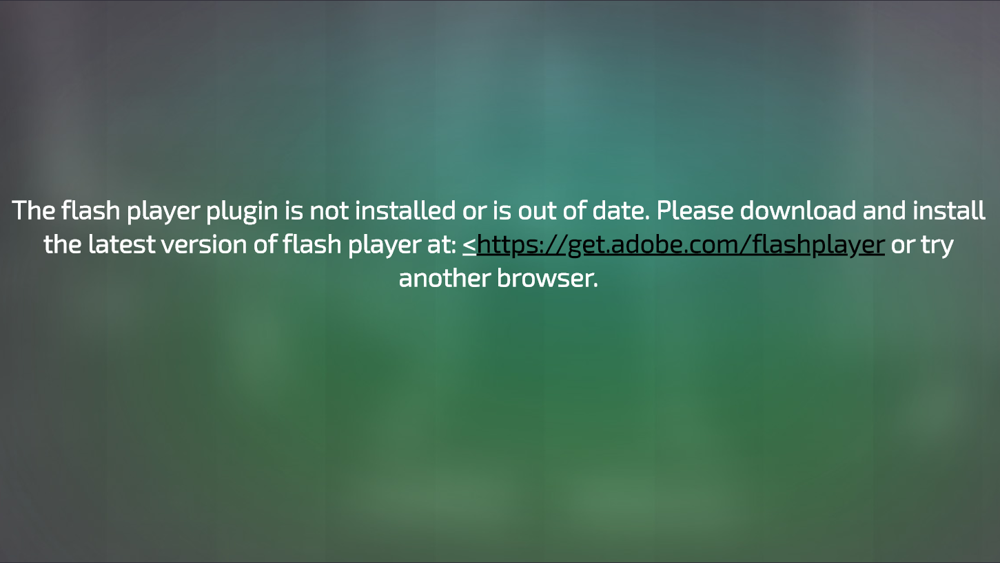
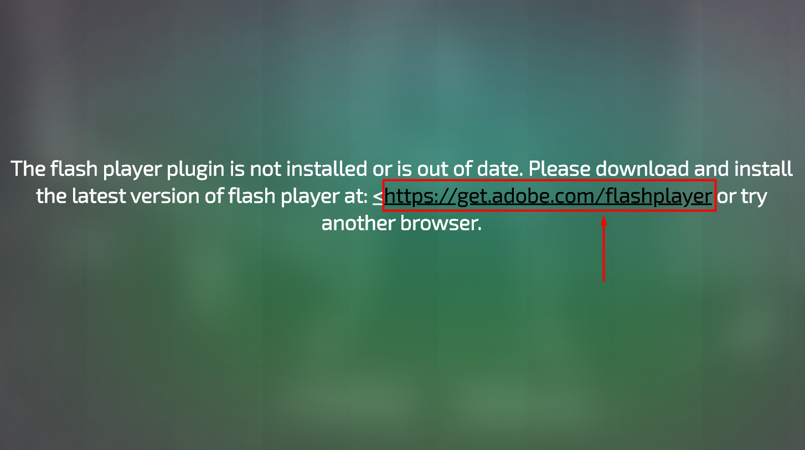
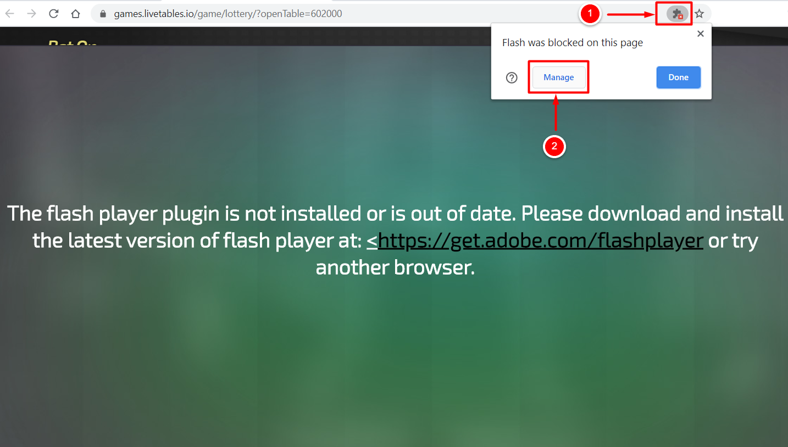
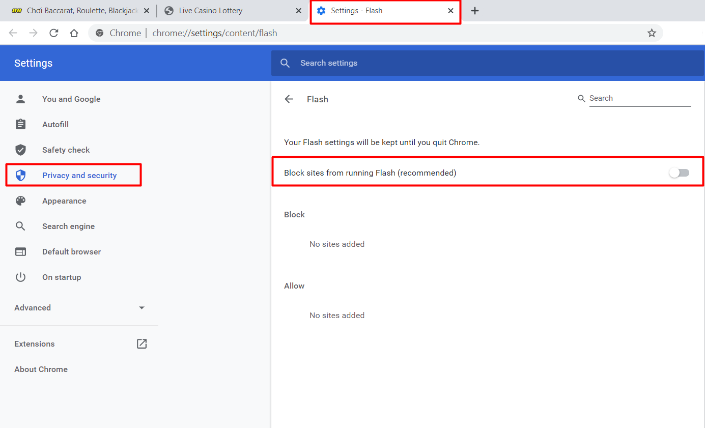
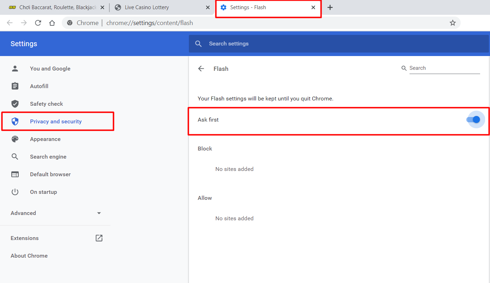
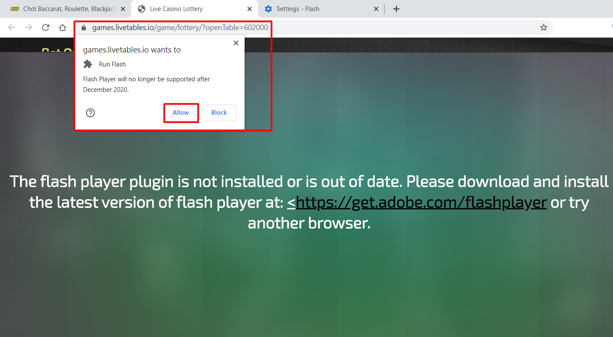
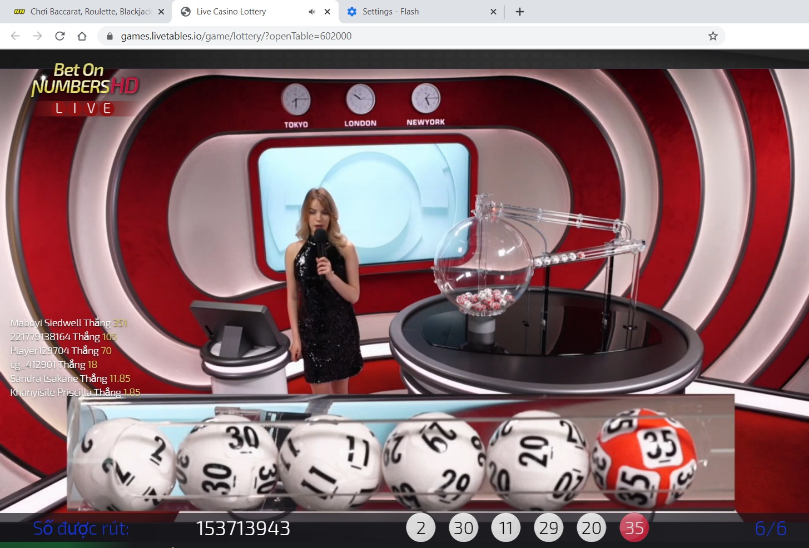

Bước 1: Khi chơi game chưa cài đặt Adobe Flash Player bạn sẽ gặp dòng thông báo dưới đây

Bước 2: Click vào link để tiến hành cài đặt Adobe Flash Player

Bước 3: Chọn vào biểu tượng số 1 và click vào Manage

Bước 4: Trình duyệt sẽ mở ra 1 tab mới

Bước 5: Bật xanh ở dòng Block sites from running Flash (recommeded) sẽ chuyển thành Ask First

Bước 6: Trở lại tab đang chơi game nhấn lại vào dòng: https://get.adobe.com/flashplayer , 1 khung thông báo nhỏ sẽ hiện ra và chọn Allow

Bước 7: Trình duyệt Chrome trên hệ điều hành Window 10, đã được cài đặt Adobe Flash Player thành công, chúc bạn chơi game vui vẻ

![time]()